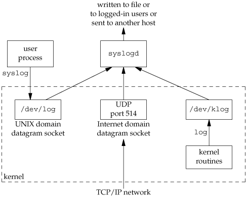

13.4. Error LoggingOne problem a daemon has is how to handle error messages. It can't simply write to standard error, since it shouldn't have a controlling terminal. We don't want all the daemons writing to the console device, since on many workstations, the console device runs a windowing system. We also don't want each daemon writing its own error messages into a separate file. It would be a headache for anyone administering the system to keep up with which daemon writes to which log file and to check these files on a regular basis. A central daemon error-logging facility is required.
The BSD syslog facility has been widely used since 4.2BSD. Most daemons use this facility. Figure 13.2 illustrates its structure. Figure 13.2. The BSD syslog facility There are three ways to generate log messages:
Refer to Stevens, Fenner, and Rudoff [2004] for details on UNIX domain sockets and UDP sockets. Normally, the syslogd daemon reads all three forms of log messages. On start-up, this daemon reads a configuration file, usually /etc/syslog.conf, which determines where different classes of messages are to be sent. For example, urgent messages can be sent to the system administrator (if logged in) and printed on the console, whereas warnings may be logged to a file. Our interface to this facility is through the syslog function.
Calling openlog is optional. If it's not called, the first time syslog is called, openlog is called automatically. Calling closelog is also optionalit just closes the descriptor that was being used to communicate with the syslogd daemon. Calling openlog lets us specify an ident that is added to each log message. This is normally the name of the program (cron, inetd, etc.). The option argument is a bitmask specifying various options. Figure 13.3 describes the available options, including a bullet in the XSI column if the option is included in the openlog definition in the Single UNIX Specification.
The facility argument for openlog is taken from Figure 13.4. Note that the Single UNIX Specification defines only a subset of the facility codes typically available on a given platform. The reason for the facility argument is to let the configuration file specify that messages from different facilities are to be handled differently. If we don't call openlog, or if we call it with a facility of 0, we can still specify the facility as part of the priority argument to syslog.
We call syslog to generate a log message. The priority argument is a combination of the facility shown in Figure 13.4 and a level, shown in Figure 13.5. These levels are ordered by priority, from highest to lowest.
The format argument and any remaining arguments are passed to the vsprintf function for formatting. Any occurrence of the two characters %m in the format are first replaced with the error message string (strerror) corresponding to the value of errno. The setlogmask function can be used to set the log priority mask for the process. This function returns the previous mask. When the log priority mask is set, messages are not logged unless their priority is set in the log priority mask. Note that attempts to set the log priority mask to 0 will have no effect. The logger(1) program is also provided by many systems as a way to send log messages to the syslog facility. Some implementations allow optional arguments to this program, specifying the facility, level, and ident, although the Single UNIX Specification doesn't define any options. The logger command is intended for a shell script running noninteractively that needs to generate log messages. ExampleIn a (hypothetical) line printer spooler daemon, you might encounter the sequence
openlog("lpd", LOG_PID, LOG_LPR);
syslog(LOG_ERR, "open error for %s: %m", filename);
The first call sets the ident string to the program name, specifies that the process ID should always be printed, and sets the default facility to the line printer system. The call to syslog specifies an error condition and a message string. If we had not called openlog, the second call could have been syslog(LOG_ERR | LOG_LPR, "open error for %s: %m", filename); Here, we specify the priority argument as a combination of a level and a facility. In addition to syslog, many platforms provide a variant that handles variable argument lists.
Most syslogd implementations will queue messages for a short time. If a duplicate message arrives during this time, the syslog daemon will not write it to the log. Instead, the daemon will print out a message similar to "last message repeated N times." |